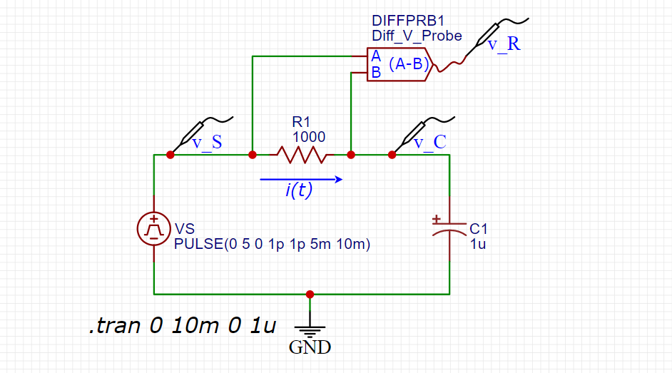
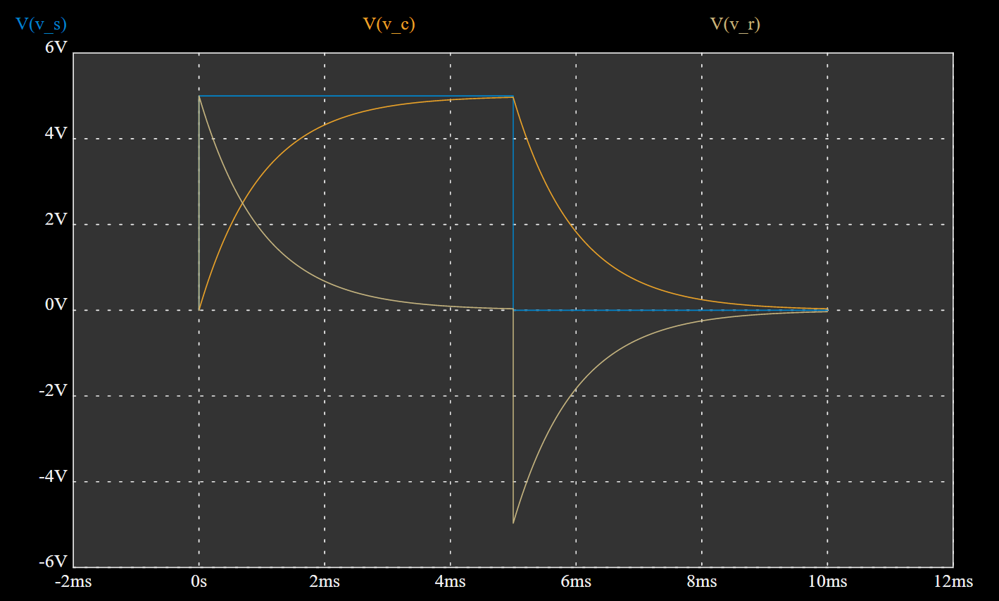
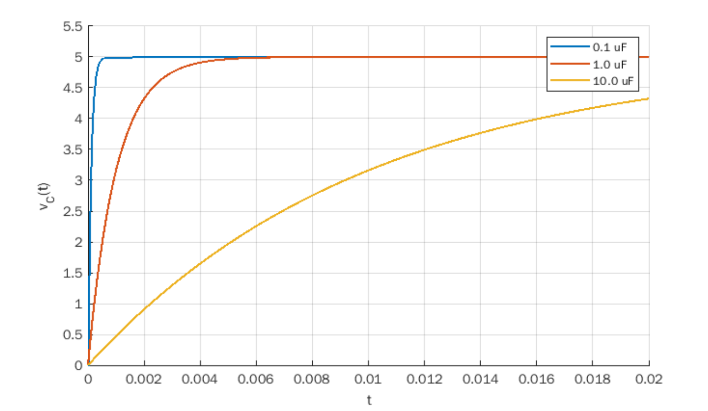
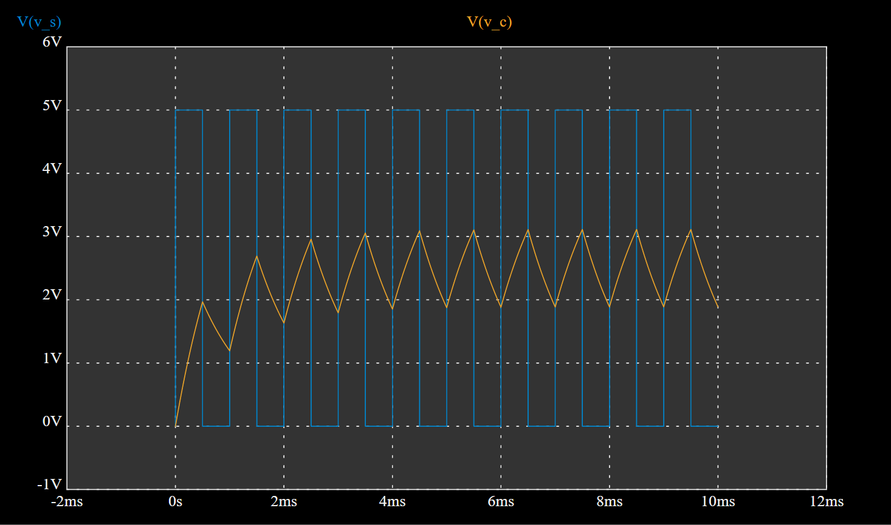
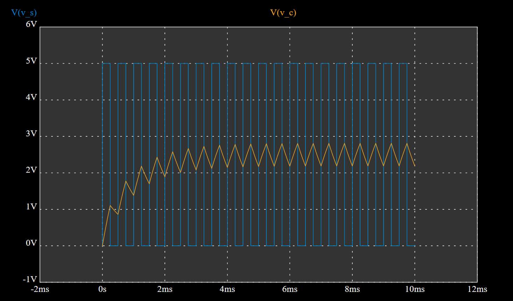
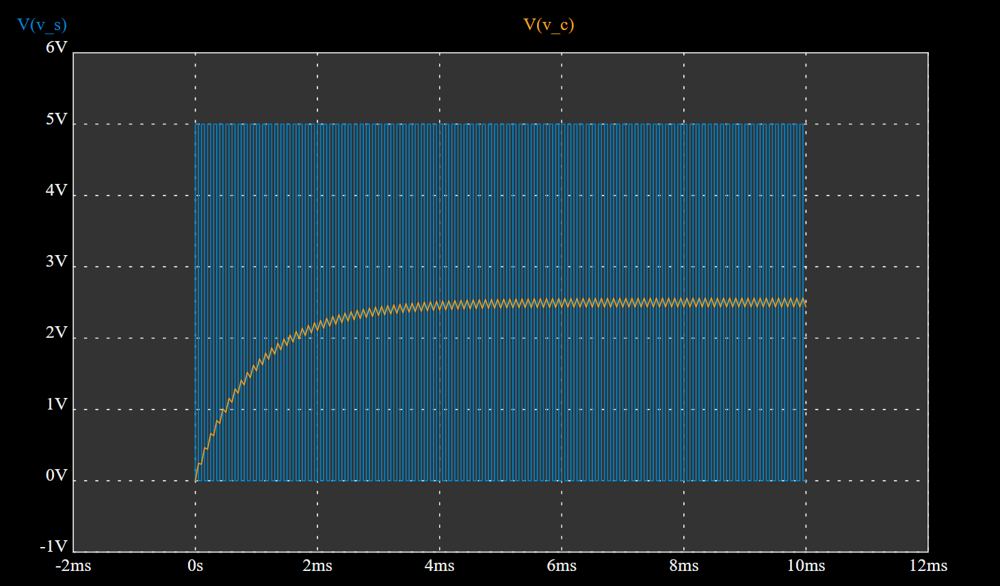
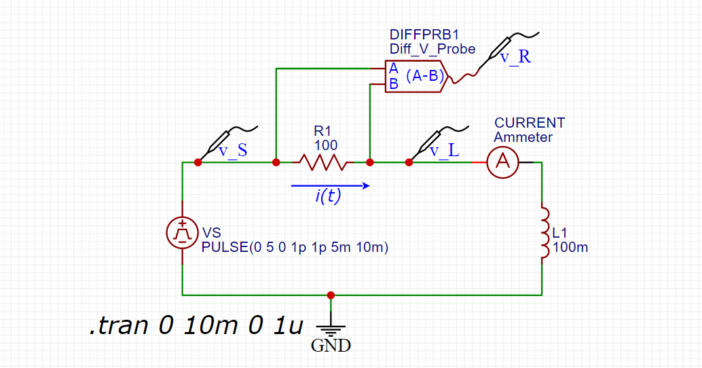
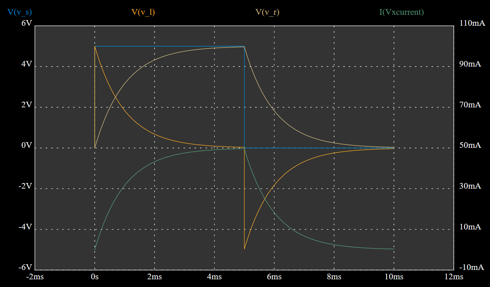

วงจรกรองความถี่แบบพาสซีฟสำหรับสัญญาณทางไฟฟ้า#
บทความนี้กล่าวถึง วงจรกรองความถี่แบบฟาสซีฟด้วยวงจร RC และตัวอย่างการจำลองการทำงานด้วยซอฟต์แวร์
Keywords: Filter Circuits, Circuit Analysis, EasyEDA, MATLAB
▷ วงจรกรองความถี่#
วงจรกรองความถี่ (Filter Circuit) เป็นวงจรที่ยอมให้สัญญาณที่มีความถี่ในย่านความถี่ที่กำหนดผ่านได้ดี แต่ช่วงความถี่อื่นจะถูกตัดออก หรือ ลดทอนแอมพลิจูดลงไป เมื่อพิจารณาย่านความถี่สำหรับการกรอง ก็จำแนกวงจรกรองความถี่ได้หลายประเภท เช่น
- วงจรกรองความถี่ต่่าผ่าน (Low-Pass Filter: LPF) ความถี่ต่ำจะผ่านได้ดี แต่ความถี่สูงจะถูกลดทอนหรือตัดออกไป
- วงจรกรองความถี่สูงผ่าน (High Pass Filter: HPF) ความถี่สูงจะผ่านได้ดี แต่ความถี่ต่ำจะถูกลดทอนหรือตัดออกไป
- วงจรกรองสัญญาณช่วงความถี่ (Band-Pass Filter: BPF) เฉพาะย่านความถี่ที่กำหนดไว้ผ่านได้ดี แต่นอกย่านความถี่จะถูกลดทอนหรือตัดออกไป
- วงจรกรองตัดหรือลดทอนความถี่เฉพาะย่าน (Band-Stop Filter: BSF หรือ Band-Reject Filter) ช่วงความที่กำหนดจะถูกตัดออก แต่ความถี่อื่น ๆ ผ่านไปได้ดี
นอกจากนั้นแล้ว วงจรกรองความถี่ก็จำแนกได้เป็น 2 ประเภท
- วงจรกรองแบบพาสซีฟ (Passive Filter) เป็นวงจรที่ประกอบด้วย R (ตัวต้านทาน) L (ตัวเหนี่ยวนำ) และ C (ตัวเก็บประจุ) นำมาต่อเป็นวงจรในรูปแบบต่าง ๆ
- วงจรกรองแบบแอกทีฟ (Active Filter) เป็นวงจรที่ถูกสร้างขึ้นโดยใช้ทรานซิสเตอร์ หรือ ไอซีประเภทออปแอมป์ (OpAmp) เป็นองค์ประกอบที่สำคัญของวงจร และมีการใช้แหล่งพลังงานไฟเลี้ยง
หากนำสัญญาณรูปคลื่นไซน์ไปใช้เป็นอินพุตของวงจรกรอง แล้ววัดสัญญาณเอาต์พุตของวงจร ขนาดของสัญญาณ (Magnitude) และเฟส (Phase) อาจแตกต่างจากสัญญาณอินพุต เมื่อเปรียบเทียบกันระหว่างสัญญาณเอาต์พุตกับอินพุต เช่น แอมพลิจูดลดลงและความต่างเฟส
ตัวอย่างการวิเคราะห์วงจรไฟฟ้าที่เกี่ยวข้องกับสัญญาณรูปคลื่นไซน์ ได้แก่ การวิเคราะห์ผลตอบสนองเชิงความถี่ของวงจร (Frequency Response Analysis) หรือถ้าใช้ซอฟต์แวร์จำลองการทำงานของวงจร จะเรียกว่า AC Sweep Simulation เพื่อดูว่า แต่ละค่าความถี่จากต่ำไปสูง ส่งผลต่อสัญญาณเอาต์พุตของวงจรอย่างไร
▷ การวิเคราะห์วงจร RC ในโหมด Transient#

รูป: การวาดวงจร RC โดยใช้ซอฟต์แวร์ EasyEDA
จากผังวงจร สามารถเขียนสมการที่เกี่ยวข้องได้ดังนี้
ดังนั้นจะได้สมการเชิงอนุพันธ์ (อันดับหนึ่ง) พร้อมเงื่อนไขเริ่มต้น และผลเฉลยดังนี้สำหรับฟังก์ชัน แบบขั้นบันได (Step Function)
ตัวอย่างโค้ด MATLAB (ใช้ Symbolic Math Toolbox) สำหรับการหาผลเฉลยของสมการเชิงอนุพันธ์สำหรับวงจร RC
% clear all symbols, variables, figures and command outputs
clearvars; clc; clf;
% define symbols
syms t R C V_S V_0 v_C(t) i(t)
% write the ODE
eqn = diff(v_C(t),t) + v_C(t)/(R*C) == V_S/(R*C);
% set the initial condition (IC)
ic = v_C(0) == V_0;
% solve the ODE to find v_C(t)
sol = dsolve( eqn, ic )
% determine the current i(t)
i(t) = simplify( C*diff(sol,t) )
หากป้อนสัญญาณ เป็นแบบขั้นบันได เช่น เปลี่ยนจาก 0V เป็น 5V ที่เวลา และ 0V เมื่อเวลา ตามลำดับ จะได้รูปคลื่นสัญญาณสำหรับแรงดันไฟฟ้าตกคร่อมดังนี้ (ตั้งค่า )

รูป: ผลการจำลองการทำงานสำหรับวงจร RC เมื่ออินพุตเป็นสัญญาณแบบขั้นบันได
ในการพิจารณารูปกราฟ ให้แบ่งเป็นสองช่วง
- ช่วงแรก จะเพิ่มจาก ไปจนถึงประมาณ เนื่องจากมีการอัดประจุไฟฟ้า (Charging)
- ช่วงที่สอง จะลดลงจาก ไปจนถึงประมาณ เนื่องจากมีการคายประจุไฟฟ้า (Discharging)
หากลองวาดรูปกราฟสำหรับ และใช้ค่าของตัวเก็บประจุที่แตกต่างกัน เช่น โดยใช้ MATLAB ก็มีตัวอย่างโค้ดดังนี้
% (continued)
% substitute parameters with specific values for v_C(t)
params = [R, V_S, V_0];
values = [1000, 5, 0];
v_C(t) = subs( sol, params, values )
% plot v_C(t) with different values of C for t=0..0.02 sec
hold on
ts = [0,0.02];
Cs = [0.1e-6, 1e-6, 10e-6];
for value=Cs
fplot( subs(v_C(t),C,value), ts, linewidth=1.5 );
end
xlabel('t'), ylabel('v_C(t)'),
ylim([0,5.5]), grid on,
legend( compose('%.1f uF', (Cs.*10^6)) )
hold off

รูป: แสดงเส้นกราฟสำหรับ สำหรับค่าตัวเก็บประจุที่แตกต่างกัน ในช่วงที่มีการชาร์จประจุ
คำถาม: หากป้อนสัญญาณ เป็นแบบ PWM (Pulse Width Modulation) ที่มีค่า Duty Cycle=50% หรือ คลื่นสี่เหลี่ยม (Rectangular Wave) ความถี่ของสัญญาณจะส่งผลต่อรูปคลื่นสัญญาณของ อย่างไร ? ลองดูตัวอย่างผลการจำลองการทำงานสำหรับความถึ่ ตามลำดับ

รูป: สัญญาณเอาต์พุต (ความถี่ )

รูป: สัญญาณเอาต์พุต (ความถี่ )

รูป: สัญญาณเอาต์พุต (ความถี่ )
จากรูปคลื่นสัญญาณจะพอสรุปได้ดังนี้
- ระดับแรงดันไฟฟ้า จะลู่เข้าสู่ 2.5V (ครึ่งหนึ่งของ 5V) เนื่องจากสัญญาณ PWM จะมีค่า Duty Cycle เท่ากับ 50%
- สัญญาณ จะไม่เรียบ มีการแกว่งอยู่ระหว่างสองระดับ ( และ ) ผลต่างเรียกว่า Ripple Voltage และช่วงของแรงดันที่แกว่งจะแคบลงถ้าใช้ความถี่สูงขึ้น
การวิเคราะห์แบ่งได้เป็นสองช่วง คือ ช่วงสัญญาณขาขึ้นเมื่อสัญญาณ PWM อยู่ที่ระดับ และช่วงขาลงเมื่อสัญญาณ PWM อยู่ที่ระดับ โดยที่ หากหาผลเฉลยของระบบสมการนี้จะได้
ถ้าใช้ความถี่ ซึ่งมีคาบ , สำหรับค่า Duty Cycle = 50% และ , , , จะได้ระดับแรงดันอยู่ในช่วงต่อไปนี้
ตัวอย่างการใช้งานวงจร RC ในลักษณะนี้กับสัญญาณ PWM ได้แก่ การสร้างสัญญาณเอาต์พุต PWM
ด้วยบอร์ด Arduino โดยใช้คำสั่ง analogWrite() ดังนั้นการปรับค่าความกว้างของพัลส์
หรือ Duty Cycle จะส่งผลต่อระดับของสัญญาณเอาต์พุตที่ผ่านวงจร RC และใช้แทนสัญญาณเอาต์พุตแบบแอนะล็อก
ในกรณีที่ชิปไมโครคอนโทรลเลอร์ไม่มีวงจร DAC (Digital-Analog Converter) อยู่ภายใน
▷ การวิเคราะห์วงจร RL ในโหมด Transient#
การวิเคราะห์วงจร RL ก็วิธีการคล้ายกับวงจร RC ซึ่งจะนำไปสู่สมการเชิงอนุพันธ์อันดับหนึ่งเช่นกัน

รูป: การวาดวงจร RL โดยใช้ซอฟต์แวร์ EasyEDA (มีการต่อแอมมิเตอร์เพื่อวัดกระแสในวงจร)
ดังนั้นจะได้สมการเชิงอนุพันธ์ (อันดับหนึ่ง) และเงื่อนไขเริ่มต้นดังนี้
ในกรณีที่สัญญาณ เป็นแบบขั้นบันได จะได้ผลเฉลยดังนี้
หากป้อนสัญญาณ เป็นแบบขั้นบันได เช่น เปลี่ยนจาก 0V เป็น 5V ที่เวลา และ 0V เมื่อเวลา ตามลำดับ จะได้รูปคลื่นสัญญาณสำหรับแรงดันไฟฟ้าตกคร่อมดังนี้ (ตั้งค่า )

รูป: ผลการจำลองการทำงานสำหรับวงจร RL เมื่ออินพุตเป็นสัญญาณแบบขั้นบันได
ในการพิจารณารูปกราฟ ให้แบ่งเป็นสองช่วง
- ช่วงแรก เมื่อเวลา กระแส เท่ากับ แล้วเพิ่มขึ้นจนถึง ซึ่งมีแนวโน้มเหมือน ที่เพิ่มขึ้นจาก 0V ไปสู่ 5V ในขณะที่แรงดันตกคร่อมที่ตัวเหนี่ยวนำ จะกระโดดไปเริ่มต้นที่ 5V แล้วลดลงเข้าใกล้ 0V
- ช่วงที่สอง จะกระโดดไปที่ -5V แล้วเพิ่มขึ้นจนเข้าใกล้ 0V ในขณะที่ ลดลง 5V ไปสู่ 0V เช่นเดียวกับกระแส ที่มีแนวโน้มลดลงจาก ไปสู่
ตัวอย่างโค้ด MATLAB สำหรับการคำนวณหากระแสและแรงดันตกคร่อมในวงจร RL
% clear all symbols, variables, figures and command outputs
clearvars; clc; clf;
% create symbols
syms t R L V_S I_0 i_L(t) v_L(t) v_R(t)
% write the ODE
eqn = diff(i_L(t),t) + (R/L)*i_L(t) == V_S/L;
% set the initial condition (IC)
ic = i_L(0) == I_0;
% solve the ODE to find i_L(t)
sol = dsolve( eqn, ic );
i_L(t) = sol
v_L(t) = L*diff(i_L(t),t)
v_R(t) = R*i_L(t)
▷ การวิเคราะห์วงจร RC ในโหมด AC#
สัญญาณอินพุตที่เป็นรูปคลื่นไซน์ ตามรูปแบบต่อไปนี้ หรือเขียนให้อยู่ในรูปแบบของเฟสเซอร์ Phasor
หากป้อนสัญญาณรูปคลื่นไซน์สำหรับ ที่มีความถี่คงที่เท่ากับ และเงื่อนไขเริ่มต้นเป็นศูนย์ ซึ่งหมายถึง ตัวเก็บประจุไม่สะสมพลังงานเอาไว้ และสนใจเฉพาะผลตอบสนองบังคับเมื่อเข้าสู่สภาวะคงตัว มีวิธีการวิเคราะห์ดังนี้
ข้อสังเกต:
- รีแอคแตนซ์ของตัวเก็บประจุ (Capacitive Reactance):
- รีแอคแตนซ์ของตัวเหนี่ยวนำ (Inductive Reactance):
- สัญลักษณ์ หมายถึง ในระบบเลขจำนวนเชิงซ้อน
หากพิจารณา แรงดันตกคร่อมที่ตัวเก็บประจุ ให้เป็นสัญญาณเอาต์พุตของวงจร ความสัมพันธ์ระหว่างเอาต์พุตต่ออินพุต เขียนได้ดังนี้
ดังนั้น ใช้ในการวิเคราะห์ผลต่อสนองเชิงความถี่ของวงจรได้ และสามารถกล่าวได้ว่า ความถี่ และค่า จะส่งผลต่อแอมพลิจูดและความต่างเฟสของสัญญาณเอาต์พุต เมื่อเปรียบเทียบกับสัญญาณอินพุต
ศึกษาเพิ่มเติมได้จากบทความที่เกี่ยวข้อง: "การวิเคราะห์และจำลองการทำงานของวงจรไฟฟ้ากระแสสลับ (AC Circuit Analysis)"
▷ กล่าวสรุป#
บทความนี้ได้นำเสนอการวิเคราะห์วงจรกรองความถี่แบบพาสซีฟ เช่น วงจร Low-Pass RC Filter และมีตัวอย่างการจำลองการทำงานด้วยซอฟต์แวร์ EasyEDA
This work is licensed under a Creative Commons Attribution-ShareAlike 4.0 International License.
Created: 2022-04-10 | Last Updated: 2023-09-20